This is a tutorial of how to create a schema using the Semantic Engine. It documents the same steps as is covered in our tutorial video.
All datasets have a schema, either implicit or explicit. The goal of the Semantic Engine is to take your knowledge of the data and document that explicitly using a schema.
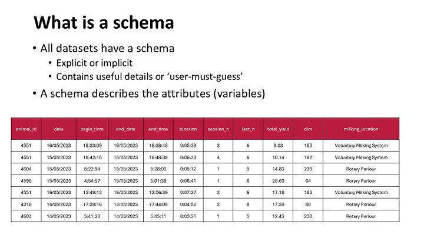The variables or attributes of a dataset are described using a schema. A schema has multiple features that can be described by a schema such as labels and descriptions.
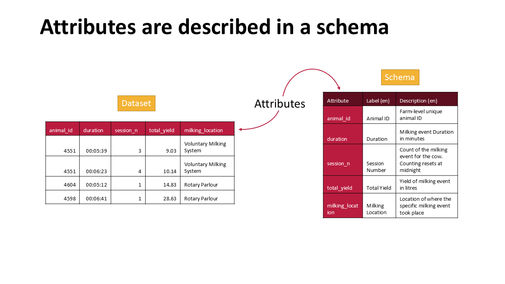You can add your dataset attributes manually to the Semantic Engine, writing them out one by one or you can import your data into the Semantic Engine and it will read the first row (and only the first row) of your dataset and extract the headers to build your attribute list. If your headers are not on the first row this import function will not work.
If your dataset is large you can even remove all the data leaving only the headers in the first row. Then you can import this almost empty dataset into the Semantic Engine and it will recognize your header row and autopopulate your schema.
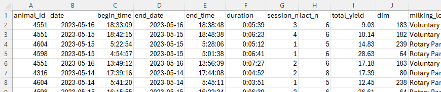Looking at the data we can see a column where there are only two entries. When you have limited entries in for a specific attribute this is an excellent opportunity to confine data entry to only the items on a list (that you will provide in a later step).
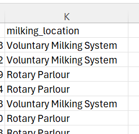At the Semantic Engine page you would select the sheet that contains the information you want to use and click next. You are given a brief alert that all schemas need to include some basic header information and every attribute must be given a datatype. If you don't provide this information your schema will not parse correctly.
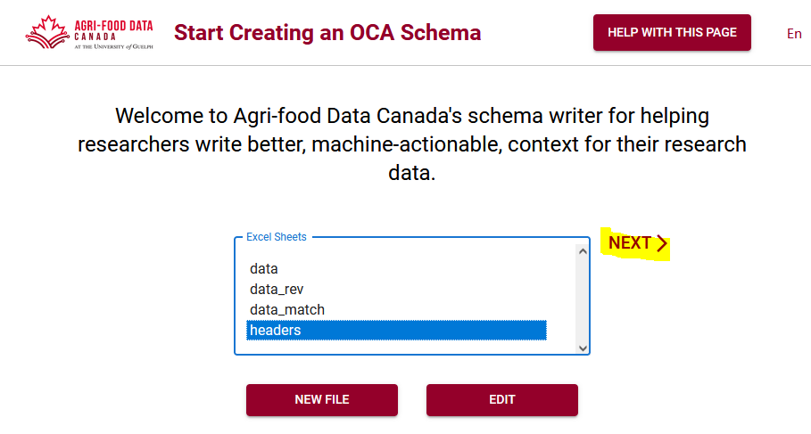At the schema metadata page you can view the attributes that have been automatically added, classify your schema and provide a name and description. You can also add additional languages to your schema here.
Every page of the Semantic Engine has places where you can find help. You can hover over any of the ?'s to find more information, and more in depth help is available on the "help with this page" button.
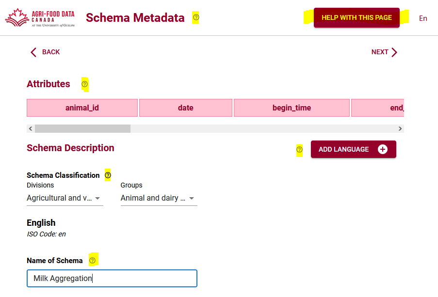On the next screen you can add details about your attributes, marking any data that might be sensitive, providing units, adding the required datatypes and where you want to restrict the data entered to values you provide in a list you can check list.
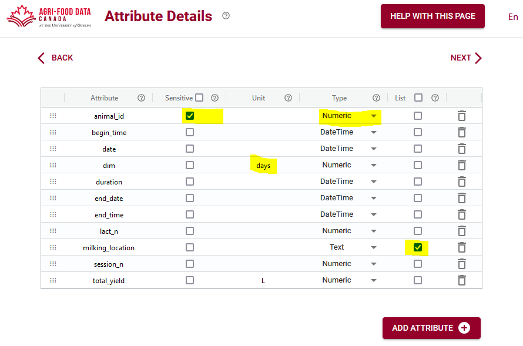Entry codes (lists) allow you to limit your data entries to the ones that you provide here. You can upload your entry codes as a .csv file, or you can copy from another attribute in your schema if you have more than one list. You can also upload another schema and reuse a list that was already in the schema.
For an example of entry codes vs labels you can look at this NSERC code list that has numbers and labels. You can also follow another example of entry codes in our blog post.
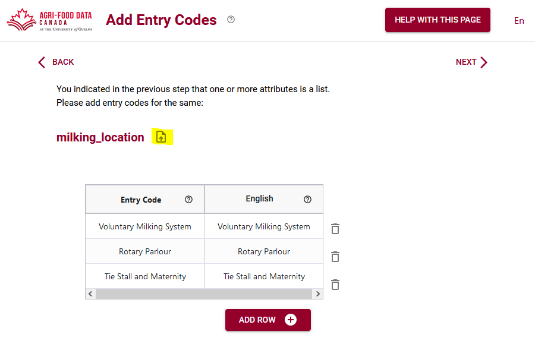Next you can add attributes and labels to your schema. Often your label will be the same as your attribute, but you have a chance to write out a confusing label a bit better to help people understand. Labels really shine when you want to present the dataset in multiple languages, then you can add labels for each language in your schema. Descriptions are where you can really help other users understand your dataset, especially when you write it to be understood by someone outside of your research area. Read our blog post to learn more about labels and descriptions.
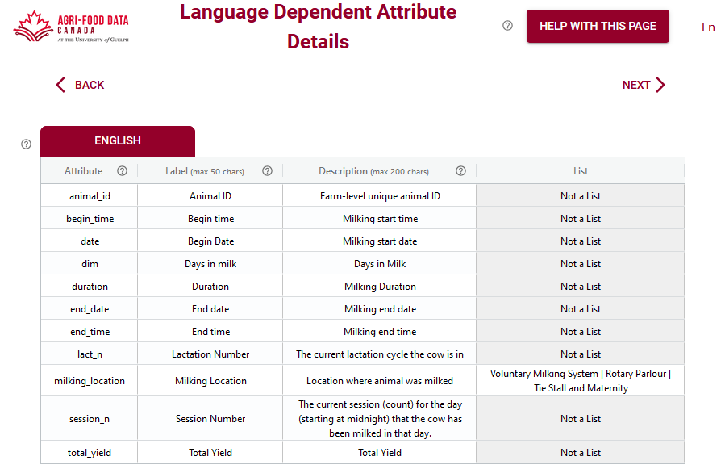There are many optional additions you can make to your schema which are called overlays. The "help with this page" button can describe them in more detail.
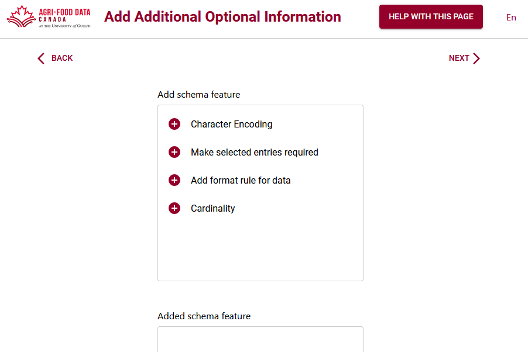The format overlay is an especially important feature you should consider adding to your schema. Here you can add rules about what format your data is supposed to be in, like that the date must be YYYY-MM-DD etc. This is very valuable and important if you want to verify your data before using it for analysis. The rules can be read by a data verifier and your data can be evaluated for mistakes.
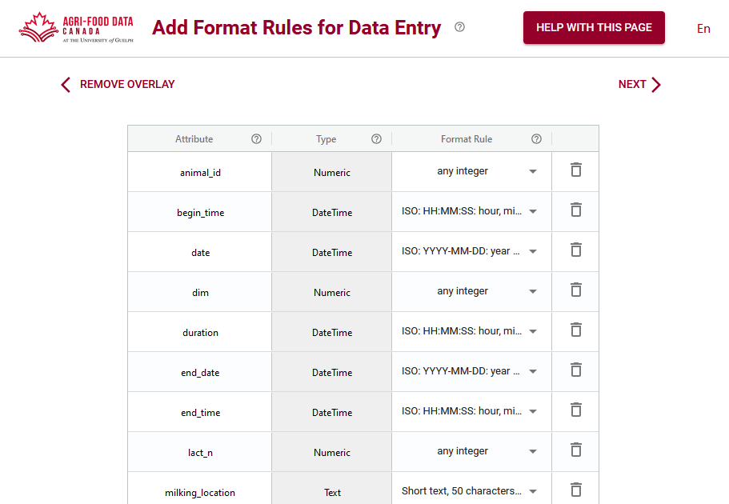After going through all these steps you have an opportunity to review everything you've added to your schema. You can go back to make corrections or you can continue and Export and Download your schemas.
The Semantic Engine provides two versions of your schema, the very important machine-readable version in .json (keep it in this format), and the human-readable and archival readme.txt format. Keep your .json because you can reload that version in the Semantic Engine and use it with many of the tools that have been created such as making a Data Entry Excel spreadsheet or verifying your data according to the rules held by the schema.